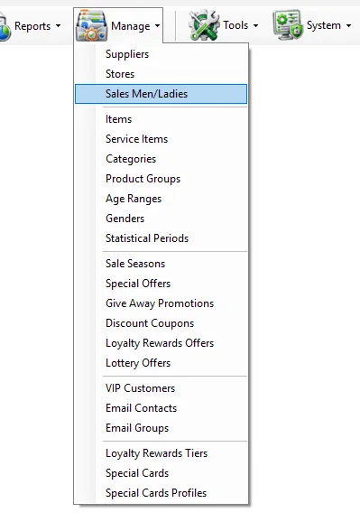
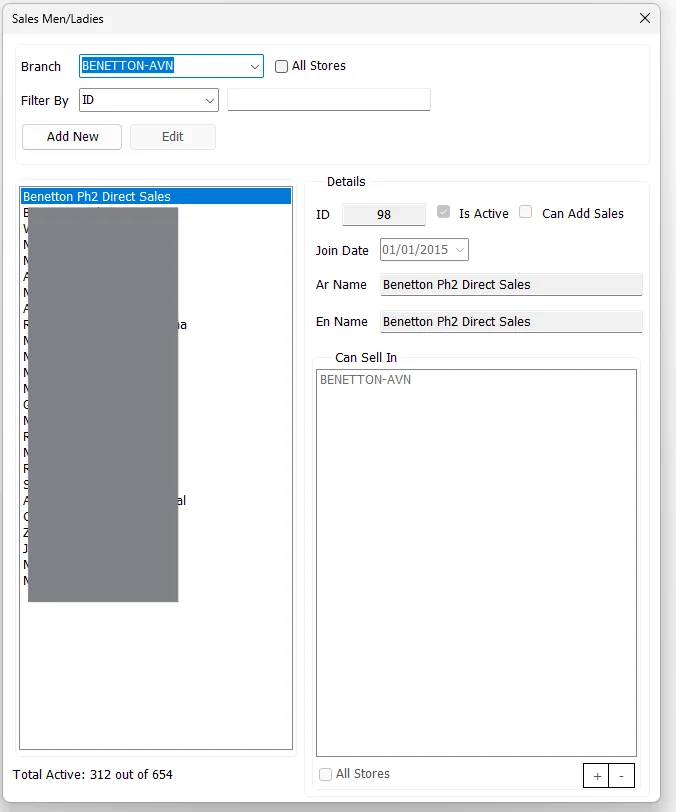

Salesperson → Store
Can Sell In
This screen defines the stores assigned to each Sales Man/Lady.
Manage Sales Men/Ladies maintains the salesperson master used by IMS sales transactions and salesperson reporting. Each person has a unique ID, Arabic and English names, join date and active status, and can be assigned to one or more stores. When the organization enables cashier access, the same salesperson can also be linked to an IMS login under the predefined cashier policy.


The upper criteria area controls which Sales Men/Ladies are shown in the list.
| Control | Purpose |
|---|---|
| Branch | When the top All Stores option is cleared, shows Sales Men/Ladies assigned to the selected branch. |
| All Stores | When selected, shows the complete Sales Men/Ladies master instead of restricting the list to one branch. |
| Filter By: ID | Finds a Sales Man/Lady by numeric ID. |
| Filter By: Arabic Name | Finds a Sales Man/Lady by the beginning of the Arabic name. |
| Filter By: English Name | Finds a Sales Man/Lady by the beginning of the English name. |
| Total Active | Shows the number of active Sales Men/Ladies compared with the total master records loaded by IMS. |
| Field | Meaning |
|---|---|
| ID | Unique numeric Sales Man/Lady identifier. The ID is entered when creating the record and is not changed afterward. |
| Is Active | Controls whether the Sales Man/Lady is active. If the person also has an IMS cashier login, the linked account follows the active/disabled state. |
| Can Add Sales | When enabled and the Cashier policy is configured, allows the Sales Man/Lady to have IMS system access under the predefined cashier group policy. |
| Login | Login name used when Can Add Sales is enabled. IMS requires the login name to be unique. |
| Join Date | Date the Sales Man/Lady joined the organization. |
| Ar Name | Required Arabic name. |
| En Name | Required English name displayed in the Sales Men/Ladies list and reporting. |
IMS validates the required ID and names, prevents duplicate Sales Man/Lady IDs and validates the Login name when cashier access is enabled.
Can Sell In defines the stores assigned to the Sales Man/Lady.
| Action | Behavior |
|---|---|
| + | Opens the IMS store-selection dialog so one or more stores can be added to the assignment. |
| - | Removes the selected store or stores from the current assignment. |
| All Stores | Assigns all currently active IMS stores to the Sales Man/Lady. |
The store assignment is stored per Sales Man/Lady and is used whenever IMS needs to know which stores that person is allowed to sell in.
When the IMS Cashier Group is configured, the Can Add Sales option is available. Enabling it connects the Sales Man/Lady master with an IMS user account so the employee can sign in and add sales under the predefined cashier group policy.
For a new cashier, IMS creates the linked user account, assigns the configured Cashier Group and synchronizes the person's store-related access from the Can Sell In assignment.
For Sales Men/Ladies with cashier access, IMS uses the assigned stores to build the associated system-access mappings:
| Access | Derived from |
|---|---|
| Department / store access | The stores listed in Can Sell In. |
| Transfer From | The same stores listed in Can Sell In. |
| Supplier access | The supplier associated with each assigned Store master. |
| Transfer To | Stores belonging to the applicable supplier(s), together with stores marked as main/warehouse stores. |
This is why Store assignments in this screen are more than a reporting label: for cashier-enabled Sales Men/Ladies, they also help IMS configure the operational access required to work from the assigned branches.
The Sales Men/Ladies master and Manage → Stores are connected in both directions:
This screen defines the stores assigned to each Sales Man/Lady.
The Store master can reference a default Sales Man/Lady for supported transaction workflows.
Add the ID, names and join date, then assign the stores where the person will sell.
Edit Can Sell In and replace the previous store assignment with the new store or stores.
Enable Can Add Sales and provide the login name so IMS can apply the predefined cashier access.
Use the Sales Men/Ladies Sales report to compare the employee's sales, invoices, ATV and UPT.